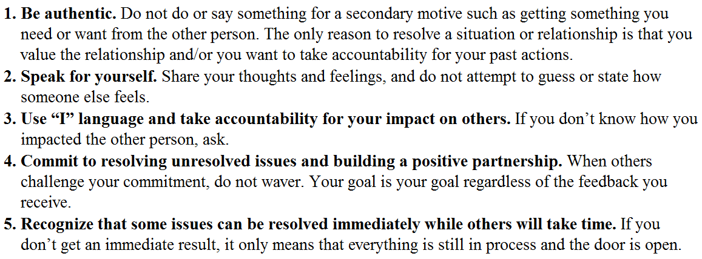
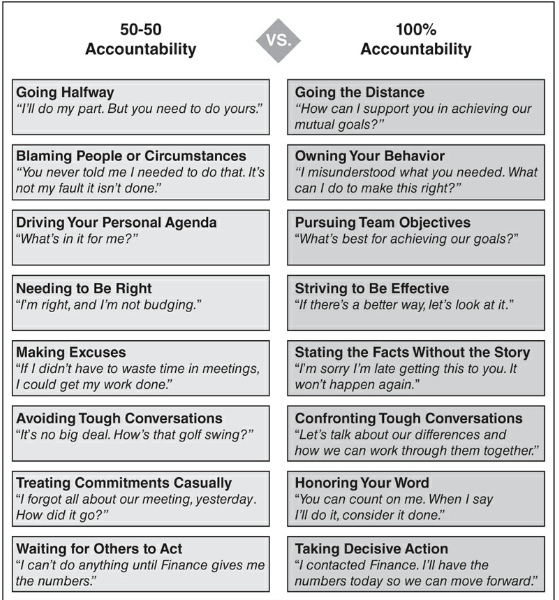
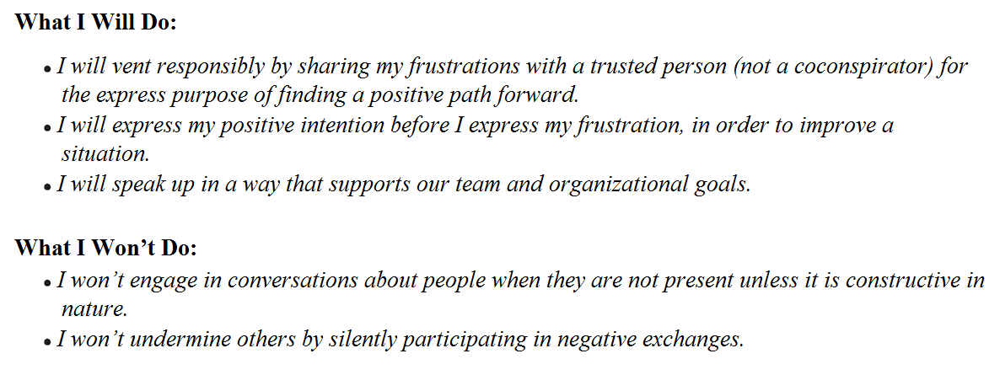
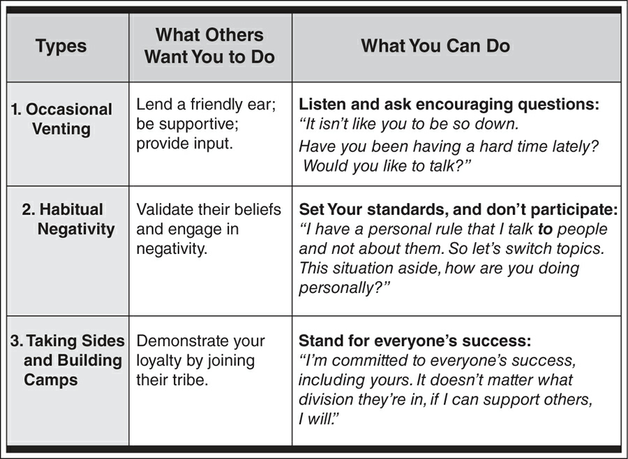

Be 100% Accountable---Rise Above Circumstances
The three holes that we become trapped in are these:
- Hole 1. Forming a rigid outlook
Perhaps you've experienced this "us-versus-them" divide such as marketing versus sales, managers versus staff, or senior leaders versus everyone else. Once you decide that certain individuals or groups fit a negative label such as untrustworthy, incompetent, or controlling, you give yourself permission to blame them as the cause of your frustrations or disappointments.
- Hole 2. Needing to be right
Are you aware of times when your need to be right is more important to you than your need to be effective? When egos dominate, people lock horns in contests over who's right. Collaboration comes to a standstill, and relationships die.
- Hole 3. Believing that you are powerless to change anything
This third hole, resignation, occurs when you feel you have exhausted everything you can do. At this point, you become paralyzed with the belief that nothing is ever going to change. You continue to put in effort, but you make an unconscious decision to work around a person or a situation. You continue blindly down a path where you tolerate negative situations instead of resolving them.
By treating the relationship as something that you can't influence or change, you lower your own standards and give up your power.
Stop Digging Holes and Start Building Bridges
How can you be taken seriously if your words and actions don't line up with your beliefs? How can you gain respect if you blame other people for your failures? How can you wield influence if you work around people and don't resolve differences? The straight answer: you can't.
To reach the height of your personal power, you must be 100% accountable, even when others take zero accountability. This may sound unreasonable, but it's the only way you can take control of your future and achieve what you want. If you believe that it's other people who need to change---not you---you need to let go of that idea fast. You can't change anyone who doesn't want to change. So put your attention on what you can do: changing your behavior in a way that will decisively influence others.
Step 1. Raise your personal standards.
You may have a clear set of personal standards that you know and understand. But for effective communication, you must communicate your personal standards to others and consistently demonstrate them in your behavior.
When you compromise who you are by how you speak (or fail to speak up), your relationships and performance suffer.
Understand what's most important to you and decide that you are going to make a conscious effort to behave consistently with your personal standards, and put this into action.
Step 2. Commit to everyone's success.
The place to start is by identifying the standards or values you both share. It's not always obvious because people don't often talk about their values. But they do give you clues by telling you what they don't like. All you have to do is turn their statements about what they don't want into a standard that represents what they believe in and do want. You talk about the value you both believe in instead of dwelling on the negative issues.
They say: "You should know better than to leave that mess here."
Unspoken shared standard. The need for an organized work environment.
You say: "I agree that a clean and organized work space is important. I will fix this."
Go beyond what appears obvious, and make the positive outcome bold and compelling. Don't worry if it is precise or not. The other person will correct you if you are off, and he or she will add more (if your statement is incomplete) to clarify what is important to him or her. The point is for you to find the strongest and highest ground that you both can stand on to solve the problem together.
Step 3. Take a bold stand for what you believe in.
A stand is a public declaration about how you will live your life and what you will and will not tolerate in yourself.


Check Your Interpretation---Confront Your Assumptions
Assumption 1: An instant response is the best response. We expect others to respond immediately, and we feel pressured to do the same.
Assumption 2: I am invincible behind my screen. We get a surge of electronic courage when we're behind our devices, and we give ourselves license to criticize and attack others and to exaggerate our image.
Assumption 3: My communication preference works for everyone. We use the communication method that is most comfortable for us, and we disregard both what is most effective and what is most comfortable for others.
Make Expectations Clear---Don't Expect Others to Read Your Mind
If you want to dramatically boost your communication effectiveness, you must accept accountability for not only what you communicate but also for how others interpret what you say.
- We aren't clear with ourselves about our expectations.
Most of the time, you won't even know you have an expectation until it's not met. It's only after you feel let down that everything bubbles to the surface and you can see the contrast between what you expected to happen and what actually happened.
-
Even when we think we are clear, we don't express our expectations clearly to others, or we don't express them at all.
-
We expect others to read our minds and know exactly what we expect from them.
First Things First: Get Clear About What You Want
Identify Your Nonnegotiables Before You Agree to Anything
Brandy: I'm happy to loan you my car, but I need three things from you. They may sound obvious, but they're important to me. First, I need you to return my car by 7 a.m. Second, the car needs to be washed and clean. And third, please make sure it has a full tank of gas. Can I count on you to do this?
Why It Works: Brandy identifies her nonnegotiables, and the conditions must be met before she agrees to loan her car. She runs through how she will articulate her criteria and adds a clear and direct request at the end of her communication.
Put the Onus on You: Make Sure Others Understand What You Want
I am responsible for communicating clear expectations and making sure others understand what I need and want. I recognize that I have hidden expectations. I will make sure I uncover them and get clear with what I expect, before I communicate with others.
I will hold myself accountable for being clear about my needs, and I will not expect others to read my mind. I will:
-
Communicate clear expectations from the outset.
-
Take accountability for making sure others accurately understand what I am saying.
-
Work with others to establish mutual criteria for a successful outcome.
-
Check in frequently to confirm and update expectations.
When I realize I have an unmet expectation, I will immediately talk to the appropriate person. I will take accountability for the misunderstanding, correct the problem, and strengthen the relationship.
I will let go of expectations about what I think others "should" or "should not" do. Instead, I will take accountability for how I communicate and the impact it has on others.
Create Positive Partnerships---Stop Negative Talk
Stop the spread of negativity and make sustainable and great relationships your goal. To do this you must set a high standard for yourself---to stop negative talk---and consistently follow it.


Establish your personal rule for not engaging in negative conversations. Explain your boundaries, but do not defend or justify them. It's your rule, and it's not subject to the opinion of others.
Be consistent, and give the same response each time. Say, "Nothing has changed for me. I'm going to say the same thing every time: talk to the person and resolve the issue. If this isn't what you want to hear, then I'm the wrong person to talk to."
Behind every complaint is a positive intention. When you complain about work, your organization, a coworker, your children, or your health, there's something you care deeply about that you are not expressing.
Your Solution: Catch Yourself and State Practice catching yourself in the act the next time you complain. Ask yourself: "What is my positive intention that I am not expressing?"
When you express your concern as a complaint. Picture yourself talking to a coworker about your boss and other higher-ups and saying: "I'm tired of irresponsible managers who don't give us clear marching orders and then blame us when things fall through the cracks." You come across as a complainer who is not doing anything about the situation.
When you express your positive intention first. Now picture yourself talking to your boss and saying: "My goal is to be effective and efficient. I would like to clarify priorities with you so I can deliver precisely what you want. I'd also like to share with you some of the frustrations I've had. Would this be okay?" You come across as someone who cares about progress and getting the job done.
Speak Up---Stop Holding Yourself Back
Commit or Do Not Commit---Don't Hedge
-
Get a Clear "Yes," "No, Not Until," or "No. Never." Response
-
Others Commit in Theory but Not in Time
- Agree on a Specific Due Date or Time
-
Communicate in advance of the due date. "I am not going to be able to deliver the report next week as I promised."
-
Take accountability for how you have affected others. "I sincerely apologize. I know this disrupts your schedule and delays the project."
-
Propose a new deadline, commitment, or action. "I can send you the report no later than 9 a.m. on Tuesday. Will that work for you?"
Say "Yes" when I am committing without conditions.
Say "No, not until" when I have conditions that must be met before I can give an unconditional "Yes."
Say "No. Never." when I have made the decision to end a conversation on a specific topic.
Own the Problem---Don't Blame or Make Excuses
Why do we blame others and make excuses? There are two primary reasons:
1. We do not want to be viewed as less than perfect or perceived as incompetent.
2. We believe there are only two options: "blame or be blamed," and we protect ourselves accordingly.
Resist the Overwhelming Desire to Engage in Counterblame
Recover Quickly and Come Back Stronger---Stop Defeating Yourself
-
Forgive yourself unconditionally.
-
Acknowledge that you are much wiser today as a result of your experiences.
-
Give yourself permission to let go of the past and regain your confidence and spirit.
-
Be generous and grant others a pardon so you can let go and move forward.
Make Things Right with Others
- Take accountability and apologize.
No one wants to hear your "story" and all the drama that comes with elaborating about what happened, especially when there are pressing matters at hand. Resist the temptation to explain, and instead, go straight to the apology. Acknowledge how your behavior has affected others, and express your sincere regret.
-
Correct the immediate the situation.
-
Make a promise for the future.